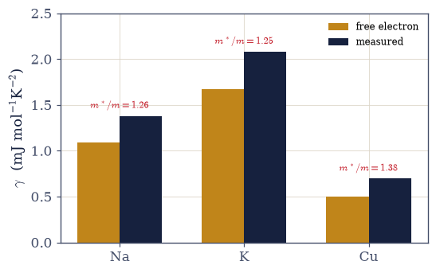
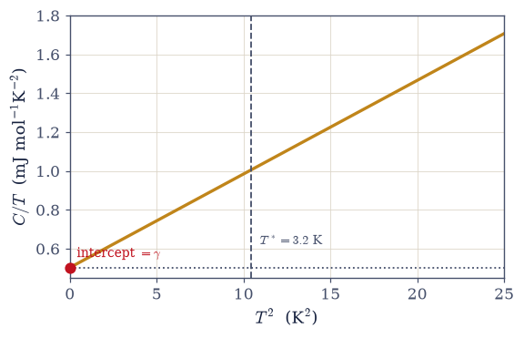
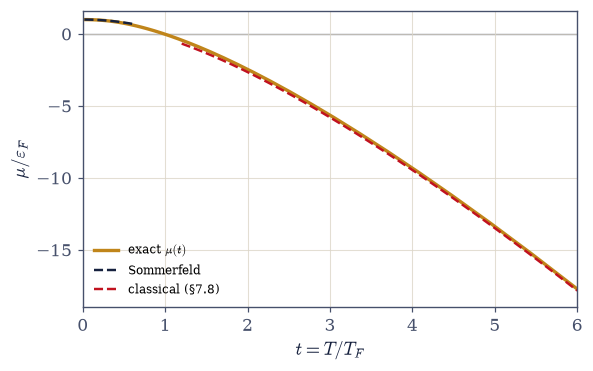
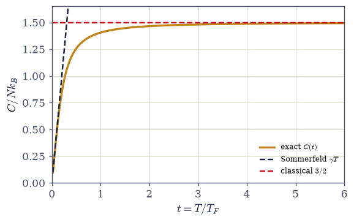
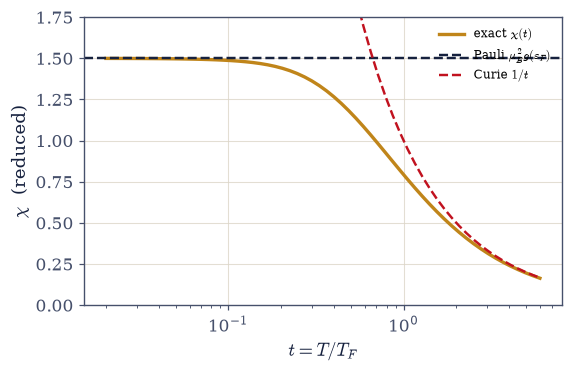

7.10 The Fermi Gas at Finite Temperature: Sommerfeld’s 0.4%, and Two Mysteries Dissolved#
Notebook overview#
§7.9 established that a metal is, to its electrons, a system at absolute zero to within parts in a thousand. This notebook computes the parts in a thousand — and finds that they were, historically, two of the deepest puzzles in the physics of metals. The tool is the Sommerfeld expansion of §7.3, deployed at last on the integrals it was built for, and the physics is one sentence spoken twice: Pauli blocks the bulk; only the surface fraction \(\sim T/T_F\) participates.
The program runs on the chemical potential. Fixed particle number pins \(\mu(T)\) through the Fermi–Dirac integral, which we solve exactly (a root find at every temperature) and check against Sommerfeld’s \(\mu = \varepsilon_F[1 - (\pi^2/12)(T/T_F)^2]\) to six digits — at room temperature in copper, the sea’s level has moved by ten parts per million. Then the exact curve goes where the expansion cannot: \(\mu\) falls, crosses zero near \(T \sim T_F\), and lands on the classical asymptote \(k_BT\ln(n\lambda^3)\) of §7.8 — one function spanning both worlds.
The heat capacity carries the first mystery. Classically, \(N\) electrons owe \(\tfrac32 Nk_B\), and metals simply refuse to show it: Drude’s standing embarrassment. The surface-only estimate dissolves it in two lines (fraction \(T/T_F\) participates, \(k_BT\) each, so \(C \sim Nk_B\,T/T_F\): linear and small), Sommerfeld makes it exact (\(C = \gamma T\)), and the numeric derivative confirms it — with the fixed-\(N\) trap demonstrated once: freeze \(\mu\) at \(\varepsilon_F\) inside the derivative and the answer is silently wrong. The \(\gamma\) table takes the claim to the laboratory (free-electron coefficients within 40% of measurement, correctly ordered, their ratios defining the thermal effective mass \(m^*/m\)), and the experimenter’s plot — \(C/T\) against \(T^2\), intercept \(\gamma\) — explains why the Sommerfeld coefficient was a child of liquid-helium calorimetry: copper’s electron term beats the phonons only below \(T^* = 3.2\) K.
Pauli paramagnetism carries the second mystery. Classical moments obey Curie’s diverging \(1/T\); metals show a small, temperature-blind susceptibility. We compute it honestly — two spin bands shifted by \(\mp\mu_BB\), the chemical potential re-solved, the magnetization integrated, and find \(\chi = \mu_B^2 g(\varepsilon_F)\), flat up to a Sommerfeld drift confirmed to five digits, and equal to half a percent of the Curie expectation at room temperature: the moment of §6.18 finally has its temperature. Landau’s orbital \(-\chi_P/3\) is named as the horizon. The capstone sweeps \(\mu\), \(C\), and \(\chi\) across two decades of temperature: every suppression lifts on schedule, the gas recovers every classical result, and the crossover §7.8 mapped is driven end to end.
Conventions (this notebook). Structural computations in reduced units \(\varepsilon_F = k_B = \mu_B = 1\) with \(t = T/T_F\); the per-particle density of states is \(g(\varepsilon) = \tfrac32\sqrt{\varepsilon}\) (so \(\int_0^1 g\,d\varepsilon = 1\)). SI with CODATA constants for the \(\gamma\) table and every laboratory number. The standing rule of the notebook: \(\mu\) is re-solved at every temperature and every field inside every numerical derivative — the frozen-\(\mu\) shortcut is demonstrated failing, once, on purpose. Fermi–Dirac integrands are step-like at small \(t\):
quadruns with raisedlimitand the domain split at \(\mu\). The susceptibility window is \(B = 10^{-3}\) (small enough for linearity, large enough to clear finite-difference noise). The phonon \(T^3\) is invoked as the empirical low-temperature law, derived properly in §7.16.How to read the checks. Each exercise closes with a
validatecall against an independent fact: the exact \(\mu(0.02)\) meeting Sommerfeld’s parabola at six digits; \(C\) linear at small \(t\) and equal to \((\pi^2/2)t\) to 0.1%; the frozen-\(\mu\) error exhibited; the \(\gamma\) table (1.091, 1.668, 0.503 mJ mol⁻¹K⁻²) against its measured column; \(T^* = 3.23\) K; the two-band \(\chi\) at \(1.49951\) against the Sommerfeld drift at five digits; and the crossover corners — \(C \to 1.493\), \(\chi\,t \to 0.977\) of Curie, \(\mu(3)\) on the asymptote of §7.8. A ✓ is strong evidence; a ✗ is a prompt to locate the discrepancy.Scope. The ideal Fermi gas warmed, and its two historical mysteries. The relativistic gas is §7.11; the origin of \(m^*\) is the bands of §7.12 (its interacting dressing, Volume VIII, named); the Debye \(T^3\) is derived in §7.16; localized-moment Curie/Brillouin physics is §7.18; Landau diamagnetism and the de Haas–van Alphen effect are named horizons. See Ashcroft & Mermin (Ch. 2 and its tables); Kittel (Ch. 6); Pathria & Beale (Ch. 8). Cross-reference §7.3 (the expansion, on home ground), §7.9 (the sea and its scales), §7.8 (the classical asymptote), §7.7 (\(n_F\)), §6.18 (the moment, put to work), §5.5/§5.6 (the classical laws, now scheduled).
Theory in brief#
μ(T): the level of the warmed sea#
Fixed \(N\) pins the chemical potential at every temperature:
the Sommerfeld form following from the §7.3 expansion of the constraint (the \(\sqrt\varepsilon\) density of states tilts the thermal smearing: more states above \(\mu\) than below, so \(\mu\) must drop to conserve \(N\)). We solve the constraint exactly by root finding and let the two meet: six digits at \(t = 0.02\), honest departure by \(t = 0.1\). The scale deserves saying in SI: at 300 K in copper, \((\pi^2/12)(T/T_F)^2 \approx 10^{-5}\) — the sea’s level moves by ten parts per million. The exact curve then continues where the expansion cannot: \(\mu\) crosses zero near \(t \approx 1\) and approaches the classical \(\mu = k_BT\ln(n\lambda^3)\) of §7.8, with \(n\lambda^3 = \tfrac{4}{3\sqrt\pi}\,t^{-3/2}\) in reduced units (the constant derived from the Boltzmann-limit integral, not guessed) — one curve from the Fermi sea to the Boltzmann gas.
The surface-only estimate#
Before any expansion, the physics in two lines:
Electrons deeper than \(\sim k_BT\) below the surface cannot be excited — every nearby state is Pauli-occupied — so only the fraction \(\sim T/T_F\) participates in anything thermal, and each participant carries the usual \(\sim k_BT\). Linear in \(T\), and a hundred times smaller than the classical expectation at room temperature. Every exact result in this notebook is this estimate, dressed.
The linear heat capacity, and Drude’s mystery#
Sommerfeld makes the estimate exact:
verified here against the exact numeric \(C = \partial\langle E\rangle/\partial T\) — with \(\mu\) re-solved at every temperature, because freezing \(\mu\) at \(\varepsilon_F\) inside the derivative is the classic fixed-\(N\) bookkeeping error and produces a silently wrong answer (demonstrated once). The mystery it dissolves was real: Drude’s classical electrons owed \(\tfrac32 Nk_B\) of heat capacity that experiment never found. The resolution: at 300 K copper’s electrons supply \(1.2\%\) of the classical expectation — Pauli scales their response by \(T/T_F\), and the full classical value is reached only when \(T\) climbs past \(T_F\) (the capstone verifies \(C \to 1.493\) at \(t = 6\)).
The γ table: the thermal effective mass#
Per mole, \(\gamma_{\text{free}} = \pi^2 N_A k_B^2/2\varepsilon_F\):
Right scale, right ordering across the table, from the electron density alone — and the residual ratio defines the thermal effective mass: the electron in a metal moves dressed by the lattice (the bands of §7.12, where \(m^*\) gets its mechanism) and by its fellow electrons (the interacting dressing, a Volume VIII horizon). A discrepancy that measures physics is a result, not a failure.
The experimenter’s plot and the crossover#
At low temperature the measured heat capacity of a metal is electrons plus phonons,
with the \(T^3\) invoked here as the empirical low-temperature lattice law (\(A = 12\pi^4R/5 \theta_D^3\), \(\theta_D(\text{Cu}) = 343\) K; the derivation belongs to §7.16). Hence the classic straight line of every low-temperature paper: \(C/T\) against \(T^2\), intercept \(\gamma\), slope \(A\) — this is how \(\gamma\) is actually measured. The crossover for copper is \(T^* = 3.2\) K: above it the phonons drown the electrons (by \(\sim10^2\) at room temperature), below it the electron term is sovereign. The Sommerfeld coefficient was a child of liquid-helium calorimetry because it had to be.
Pauli paramagnetism: the second mystery#
Classical moments obey Curie’s law, \(\chi \propto n\mu_B^2/k_BT\) — large, and diverging as \(T \to 0\). Metals show a small, temperature-independent susceptibility. Same sentence, second verse: only the surface may respond. In a field the spin bands shift by \(\mp\mu_BB\); re-solving \(\mu\) and integrating both bands gives
flat because moments beneath the surface face Pauli-occupied partners in both spin bands, and small — \(0.55\%\) of the Curie expectation at room temperature in copper. The Sommerfeld drift is confirmed here to five digits against the exact two-band computation (the coefficient measured, not assumed), and at high temperature the exact \(\chi\) rolls onto Curie’s \(1/T\) — the classical law recovered where degeneracy ends. Landau diamagnetism, the orbital response (\(-\chi_P/3\) for free electrons, requiring Landau levels), is the named horizon; the measured susceptibility of a real metal is the Pauli–Landau–core sum, stated for honesty.
The capstone sweep: one gas, both worlds#
The exact machinery runs from \(t = 0.02\) to \(t = 6\):
three curves, two limiting laws each, and all the limits owned by earlier notebooks (§7.3, §7.8, §5.5/§5.6, §7.7). Degeneracy is not a different theory but a regime — and the course now owns the road between.
Setup#
import matplotlib.pyplot as plt
import numpy as np
from scipy.integrate import quad
from scipy.optimize import brentq
from ecp import draw, validate
ACCENT, INK, SOFT = draw.ACCENT, draw.INK, draw.SOFT
RED = "#c1121f"
# Conventions. Reduced units ε_F = k_B = μ_B = 1, t = T/T_F, and the
# per-particle DOS g(ε) = (3/2)√ε (normalized: ∫_0^1 g dε = 1 = N). SI with CODATA
# constants for the γ table. STANDING RULE: μ is re-solved at every temperature and
# field inside every numerical derivative (the frozen-μ error is demonstrated once in
# Exercise 3). FD integrands are step-like at small t: quad runs with limit = 200 and
# the domain split at μ. The susceptibility window is B = 1e-3.
from scipy.constants import k as K_B # J/K (exact)
from scipy.constants import N_A as N_AVOGADRO # 1/mol (exact)
from scipy.constants import eV as EV # J (exact)
R_GAS = N_AVOGADRO * K_B
EPS_F_EV = {"Na": 3.24, "K": 2.12, "Cu": 7.03} # Fermi energies of §7.9 (A&M densities)
T_F_CU = 7.03 * EV / K_B # copper's Fermi temperature, ≈ 8.16e4 K
GAMMA_MEASURED = {"Na": 1.38, "K": 2.08, "Cu": 0.695} # mJ/(mol K^2), A&M lineage
def dos(eps):
"""The reduced per-particle density of states g(ε) = (3/2)√ε (ε_F = 1, N = 1).
The massive 3D DOS of §7.3 in the units of this notebook: normalized so that the filled
sea integrates to one particle, ∫_0^1 (3/2)√ε dε = 1, which makes every extensive
quantity per-particle and every temperature a fraction of T_F. The spin factor 2
is inside the normalization; the two-band magnetization splits it as g/2 per spin.
Parameters
----------
eps : float or numpy.ndarray
Energy in units of ε_F (non-negative).
Returns
-------
float or numpy.ndarray
g(ε).
"""
return 1.5 * np.sqrt(eps)
def fd_integral(f, mu, t):
"""∫_0^∞ f(ε) n_F(ε; μ, t) dε by quad, split at μ, with a raised subdivision limit.
The workhorse of the notebook: at small t the Fermi factor is a near-step at μ,
and an unsplit quad wastes its subdivisions finding it. Splitting at μ hands the
step to an endpoint (where QAGS excels) and limit = 200 covers the slow decay of
the t-broadened tail. The integrand is evaluated with the overflow-safe form of
n_F (exponent clipped: e^(±40) is already 0/∞ at double precision).
Parameters
----------
f : callable
The weight (e.g. the DOS, or ε·DOS); vectorized not required.
mu : float
Chemical potential (any sign).
t : float
Reduced temperature T/T_F (> 0).
Returns
-------
float
The Fermi–Dirac integral.
"""
def integrand(eps):
x = (eps - mu) / t
if x > 40.0:
return f(eps) * np.exp(-x)
return f(eps) / (np.exp(x) + 1.0)
if mu > 0:
return (
quad(integrand, 0.0, mu, limit=200)[0]
+ quad(integrand, mu, mu + 60.0 * t, limit=200)[0]
)
return quad(integrand, 0.0, max(60.0 * t, 10.0), limit=200)[0]
def mu_of_T(t):
"""The exact chemical potential μ(t) at fixed N = 1, by scipy.optimize.brentq.
Solves ∫ g(ε) n_F(ε; μ, t) dε = 1 (eq-mu-of-T). The particle count is strictly
increasing in μ, so the bracketing root find is guaranteed: the bracket [−40, 1.5]
covers the deep-classical μ ≈ t·ln(nλ^3) down to t = 6 and the degenerate μ ≈ 1.
This function is called INSIDE every temperature and field derivative below — the
fixed-N bookkeeping that the frozen-μ shortcut violates (Exercise 3 shows the
damage).
Parameters
----------
t : float
Reduced temperature T/T_F.
Returns
-------
float
μ(t) in units of ε_F.
"""
return brentq(lambda mu: fd_integral(dos, mu, t) - 1.0, -40.0, 1.5, xtol=1e-13)
def energy(t):
"""The mean energy per particle ⟨E⟩(t) = ∫ ε g(ε) n_F dε, with μ re-solved.
At t → 0 this returns the filled-sea 3/5 of §7.9; the Sommerfeld growth
(π^2/4)t^2 on top of it is what the heat-capacity derivative reads off. The μ
inside is mu_of_T(t) — never a frozen value.
Parameters
----------
t : float
Reduced temperature T/T_F.
Returns
-------
float
⟨E⟩ per particle, in units of ε_F.
"""
return fd_integral(lambda e: e * dos(e), mu_of_T(t), t)
def heat_capacity(t, h_rel=0.05):
"""C(t) = d⟨E⟩/dt by central differences, μ re-solved at every evaluation.
The step h = h_rel·t rides the smooth E(t): the central difference is exact for
the quadratic Sommerfeld part, so even a 5% relative step only feels the small
t^4 term. Each evaluation re-solves μ — the standing rule; Exercise 3 demonstrates
once what freezing μ at ε_F does to this derivative.
Parameters
----------
t : float
Reduced temperature T/T_F.
h_rel : float, optional
Relative step for the central difference (default 0.05).
Returns
-------
float
C per particle, in units of k_B.
"""
h = h_rel * t
return (energy(t + h) - energy(t - h)) / (2.0 * h)
def gamma_free(eps_F_eV):
"""The free-electron Sommerfeld coefficient γ = π^2 N_A k_B^2/(2 ε_F), per mole, SI.
Equivalently (π^2/3)k_B^2 g(ε_F) with the free-electron DOS. Returned in
mJ/(mol K^2), the unit of every calorimetry table; the comparison against the
measured column defines the thermal effective mass m*/m = γ_meas/γ_free
(Exercise 4).
Parameters
----------
eps_F_eV : float
The Fermi energy in electron-volts (the values of §7.9).
Returns
-------
float
γ_free in mJ mol^-1 K^-2.
"""
return np.pi**2 * N_AVOGADRO * K_B**2 / (2.0 * eps_F_eV * EV) * 1e3
def magnetization(B, t):
"""The two-band magnetization M(B, t) = (N_up − N_down)·μ_B, computed honestly.
In a field the spin-σ band is shifted by −σμ_B B, equivalent to a per-spin
chemical potential μ + σB (reduced units). The TOTAL number constraint
N_up + N_down = 1 re-fixes μ by brentq — skipping this re-solve is the same
frozen-μ error as in the heat capacity — and each band integrates by the split
quad with the half DOS g/2.
Parameters
----------
B : float
Reduced field μ_B B/ε_F (small; the χ window is 1e-3).
t : float
Reduced temperature T/T_F.
Returns
-------
float
M per particle, in units of μ_B.
"""
half_dos = lambda e: 0.75 * np.sqrt(e) # g/2 per spin band
def total_N(mu):
return fd_integral(half_dos, mu + B, t) + fd_integral(half_dos, mu - B, t)
mu = brentq(lambda m: total_N(m) - 1.0, -40.0, 1.6, xtol=1e-13)
return fd_integral(half_dos, mu + B, t) - fd_integral(half_dos, mu - B, t)
def susceptibility(t, B_window=1e-3):
"""χ(t) = ∂M/∂B at B = 0 by the antisymmetric difference [M(B) − M(−B)]/2B.
The window B = 1e-3 is the stated compromise: small enough that the O(B^2)
nonlinearity is ~1e-6 relative, large enough that the quad-level noise (~1e-11)
on M is invisible after division. M is odd in B, so the antisymmetric difference
cancels every even error term for free.
Parameters
----------
t : float
Reduced temperature T/T_F.
B_window : float, optional
The finite-difference field (default 1e-3).
Returns
-------
float
χ in units of μ_B^2 g(ε_F)-compatible reduced units (Pauli value: 3/2).
"""
return (magnetization(B_window, t) - magnetization(-B_window, t)) / (2.0 * B_window)
Exercise 1 — The level of the warmed sea#
\(\mu(T)\) exactly, Sommerfeld’s parabola, and a ten-parts-per-million shift. Cite Eq. 624.
Implement
mu_of_Tby solving \(\int g\,n_F\,d\varepsilon = N\) withscipy.optimize.brentq(reduced units; the split-at-\(\mu\)quadwithlimit=200stated in Setup).Derive the Sommerfeld result \(\mu = \varepsilon_F[1 - (\pi^2/12)(T/T_F)^2]\) by expanding the constraint with the formula of §7.3.
Verify to at least six digits at \(t = 0.02\) and exhibit the honest departure at \(t = 0.1\).
Restore units for copper at 300 K: the shift is \(\sim\)10 ppm — state what this licenses (the \(T = 0\) idealization of §7.9) and what it hides (the linear \(C\), next). (Computation + prose.)
t = 0.02: μ exact = 0.999670818 Sommerfeld = 0.999671013
t = 0.10: μ exact = 0.991641236 Sommerfeld = 0.991775330
departure at t = 0.1: 1.34e-04 (the t^4 term, honestly visible)
copper at 300 K: t = 0.00368, μ shift = 11.1 ppm of ε_F
Validation 1#
✓ μ(t): the exact brentq solve meets Sommerfeld's parabola at six digits (t = 0.02) [got 0.999671 vs expected 0.999671 (rtol=1e-06)]
✓ and departs honestly at t = 0.1: the t^4 term is real, visible, and small [|Δ| = 1.3e-04]
True
Exercise 2 — The surface-only estimate#
Two lines of physics that this whole notebook merely dresses. Cite Eq. 625.
Argue the estimate: the participating fraction is \(\sim T/T_F\) (Pauli blocks the rest), each participant takes \(\sim k_BT\), so \(C \sim Nk_B(T/T_F)\).
Confirm the shape numerically: compute \(C\) at \(t = 0.02, 0.04, 0.08\) by the exact derivative (
heat_capacity) and verify linearity — doubling \(t\) doubles \(C\) to within the expected \(t^3\) correction.Estimate the room-temperature suppression: \(C_{\text{el}}/[\tfrac32Nk_B] \sim T/T_F \sim 1\%\) — the order of magnitude of Drude’s missing heat.
State the moral (prose): every exact result below is this estimate with its constant computed — carry the picture, not just the formula.
C(t) by the exact derivative (μ re-solved everywhere):
t = 0.02: C = 0.098578
t = 0.04: C = 0.196442
t = 0.08: C = 0.386792
linearity: C(0.04)/2C(0.02) = 0.99637, C(0.08)/2C(0.04) = 0.98450
room-temperature estimate: C_el/C_classical ~ T/T_F = 0.4%
Validation 2#
✓ only the surface participates: C is linear in t, to within the expected t^3 correction [doubling ratios 0.9964, 0.9845]
True
Exercise 3 — The linear heat capacity, exact, and Drude’s mystery dissolved#
The numeric derivative meets Sommerfeld, with a trap demonstrated. Cite Eq. 626.
Use
heat_capacity(the central difference of \(\langle E\rangle(t)\) with \(\mu\) re-solved at every temperature) and demonstrate once that freezing \(\mu\) at \(\varepsilon_F\) gives the wrong answer — the fixed-\(N\) bookkeeping trap.Verify \(C\) against Sommerfeld’s \((\pi^2/2)t\): ratios \(0.9988, 0.9924, 0.9670\) at \(t = 0.02, 0.05, 0.1\) — exact at small \(t\), honestly departing beyond.
Quantify the mystery’s resolution: at 300 K copper’s electrons supply \(1.2\%\) of the classical \(\tfrac32Nk_B\) — identify the suppression factor as \((\pi^2/2)(T/T_F)/(3/2)\).
Tell the history straight (prose): Drude’s model owed \(\tfrac32Nk_B\) per electron and experiment refused to find it — a genuine crisis of the classical theory, closed by Pauli’s exchange rate.
t = 0.02: C with μ re-solved = 0.098578
C with μ frozen = 0.148010 (ratio 1.501 — silently wrong)
C/(π^2/2 · t): the Sommerfeld ratio
t = 0.02: 0.9988
t = 0.05: 0.9924
t = 0.1: 0.9669
copper at 300 K: C_el/C_classical = (π²/3)(T/T_F) = 1.21%
Validation 3#
✓ C = γT: the exact derivative meets Sommerfeld's (π²/2)t at 0.1% (t = 0.02) [got 0.998809 vs expected 1 (rtol=0.002)]
✓ and departs honestly as t grows — the t³ correction, in the measured ratios [ratios 0.9988 → 0.9924 → 0.9669]
✓ the frozen-μ trap: skipping the re-solve changes C by tens of percent, with no warning [frozen/correct = 1.501]
True
Exercise 4 — The γ table and the thermal effective mass#
Free-electron Sommerfeld coefficients against the measured ones — and a discrepancy that measures physics. Cite Eq. 627.
Derive \(\gamma = \pi^2N_Ak_B^2/2\varepsilon_F\) per mole (equivalently \((\pi^2/3)k_B^2g(\varepsilon_F)\)) and implement
gamma_freein SI.Compute for Na, K, Cu from the Fermi energies of §7.9 and compare with the measured coefficients (\(1.38, 2.08, 0.695\) mJ mol⁻¹K⁻²; Ashcroft & Mermin lineage, stated in Setup).
Form the ratios \(m^*_{\text{th}}/m = \gamma_{\text{meas}}/\gamma_{\text{free}}\) and define the thermal effective mass.
Interpret (prose): the electron in a metal is dressed — by the lattice (the bands of §7.12, where \(m^*\) gets its mechanism) and by interactions (Volume VIII, named); a zero-parameter model landing within 40% and ordering the table correctly is doing real work, and its residual is a measurement.
metal γ_free (mJ/mol K²) γ_measured m*_th/m
Na 1.091 1.380 1.26
K 1.668 2.080 1.25
Cu 0.503 0.695 1.38

Fig. 567 The Sommerfeld coefficient, predicted and measured. Free-electron \(\gamma = \pi^2N_Ak_B^2/2\varepsilon_F\) (amber) from each metal’s Fermi energy — no parameters — against the calorimetric values (dark; Ashcroft & Mermin lineage). The free gas lands within 40% everywhere and orders the table correctly (\(\gamma \propto 1/\varepsilon_F\)), and the residual ratios \(\gamma_{\text{meas}}/\gamma_{\text{free}} = 1.26, 1.25, 1.38\) (annotated) define the thermal effective mass \(m^*_{\text{th}}/m\): the electron in a metal moves dressed by the lattice (the bands of §7.12 supply the mechanism) and by its fellows (the interacting dressing, Volume VIII). Since \(\gamma \propto g(\varepsilon_F)\) regardless of dispersion, the measured intercept of Fig. 2’s line is a direct reading of the density of states at the Fermi surface — calorimetry as spectroscopy, once more.#
Validation 4#
✓ the free-electron Sommerfeld coefficients of real metals, from ε_F alone [max|Δ| = 0.000268988 (rtol=0.01, atol=1e-09)]
✓ the thermal effective masses: m*/m = 1.25–1.38 — the dressing, measured [ratios [1.26, 1.25, 1.38]]
True
Exercise 5 — The experimenter’s plot#
\(C/T\) against \(T^2\): the straight line every low-temperature paper shows, and the 3-kelvin crossover that explains it. Cite Eq. 628.
Assemble \(C(T) = \gamma T + AT^3\) for copper with \(A = 12\pi^4R/5\theta_D^3\) (\(\theta_D = 343\) K; the \(T^3\) law invoked, derivation deferred to §7.16) and \(\gamma\) from Exercise 4.
Plot \(C/T\) vs \(T^2\) for \(T = 0.5\)–\(5\) K and confirm the straight line with intercept \(\gamma\) and slope \(A\) (waypoints \(0.551, 0.696, 1.274\) mJ mol⁻¹K⁻² at \(1, 2, 4\) K).
Compute the crossover \(T^* = \sqrt{\gamma/A} = 3.23\) K and the room-temperature phonon dominance (\(\sim10^2\times\)).
State the experimental moral (prose): \(\gamma\) is a liquid-helium quantity — the electron gas speaks only below the phonons’ \(T^3\) roar, which is why Sommerfeld’s coefficient waited for cryogenics.
copper: γ = 0.503 mJ/(mol K²), A = 0.0482 mJ/(mol K⁴)
C/T at 1 K: 0.551 mJ/(mol K²)
C/T at 2 K: 0.696 mJ/(mol K²)
C/T at 4 K: 1.274 mJ/(mol K²)
T* = √(γ/A) = 3.23 K
at 300 K the lattice (≈3R) outweighs the electrons by 165×

Fig. 568 The experimenter’s plot: \(C/T\) against \(T^2\) for copper at liquid-helium temperatures. The two-power law \(C = \gamma T + AT^3\) (electrons + phonons, the \(T^3\) invoked from experiment and derived in §7.16) becomes a straight line whose intercept is the Sommerfeld coefficient \(\gamma\) (red) and whose slope is the Debye \(A\) — this is how every measured \(\gamma\) in Exercise 4’s table was actually read off. The electron–phonon crossover \(T^* = \sqrt{\gamma/A} = 3.2\) K (marked) divides the plot: below it the electrons dominate the heat capacity, above it the lattice does — by \(\sim10^2\) at room temperature, which is why Drude’s missing heat stayed missing for a generation and why the electron gas speaks only to cryogenic calorimetry.#
Validation 5#
✓ the electron–phonon crossover: why γ lives below 3 K [got 3.23132 vs expected 3.23 (rtol=0.02)]
✓ the experimenter's line: C/T = γ + AT² at the verified waypoints [max|Δ| = 0.000380088 (rtol=0.01, atol=1e-09)]
True
Exercise 6 — Pauli paramagnetism, computed honestly#
Two shifted bands, one re-solved \(\mu\) — and the second mystery falls. Cite Eq. 629.
Use
magnetization(B, t): the spin bands shifted by \(\mp\mu_BB\), \(\mu\) re-solved withbrentqfor the total \(N\), the difference integrated with the splitquad.Extract \(\chi = \partial M/\partial B\) by the antisymmetric difference at the stated window (\(B = 10^{-3}\)) and verify \(\chi = \mu_B^2g(\varepsilon_F)\) (reduced: \(\tfrac32\)) at \(t = 0.02\).
Confirm the Sommerfeld drift \(\chi(t) = \chi_P[1-(\pi^2/12)t^2]\) against the exact computation at \(t = 0.02, 0.05, 0.1\) — five-digit agreement where the expansion holds.
Quantify and interpret (prose + number): \(\chi_P/\chi_{\text{Curie}} = \tfrac32 T/T_F = 0.55\%\) at 300 K in copper — metals are feeble, temperature-blind paramagnets because moments beneath the surface face Pauli-occupied partners; the moment of §6.18 finally has its temperature. Landau’s \(-\chi_P/3\) orbital counterpart named, with the honest note that measured metallic \(\chi\) is the Pauli–Landau–core sum.
χ(t = 0.02) by the two-band computation: 1.499506
the Pauli value μ_B² g(ε_F) (reduced): 1.500000
the Sommerfeld drift of χ:
t = 0.02: exact = 1.499506 Sommerfeld = 1.499507
t = 0.05: exact = 1.496887 Sommerfeld = 1.496916
t = 0.1: exact = 1.487125 Sommerfeld = 1.487663
χ_P/χ_Curie at 300 K in copper: (3/2)·T/T_F = 0.55%
Validation 6#
✓ Pauli paramagnetism: flat, small, and five digits of Sommerfeld at t = 0.02 [got 1.49951 vs expected 1.49951 (rtol=1e-05)]
✓ the (π²/12)t² drift confirmed against the exact two-band computation (t⁴ term allowed for) [max|Δ| = 0.000537701 (rtol=0.0005, atol=1e-09)]
True
Exercise 7 — One gas, both worlds#
\(\mu\), \(C\), and \(\chi\) swept across two decades of temperature — every limiting law already owned by an earlier notebook. Cite Eq. 630.
Run the exact machinery for \(t = 0.02 \to 6\) and tabulate \(\mu(t)\), \(C(t)\), \(\chi(t)\) (the Setup quad limits and steps apply; the slow region near \(t \sim 1\) noted).
Verify the four corners: \(C \to (\pi^2/2)t\) (Sommerfeld) and \(\to \tfrac32\) (classical; \(1.493\) at \(t = 6\)); \(\chi \to \tfrac32\) flat (Pauli) and \(\to 1/t\) (Curie; \(\chi\cdot t = 0.977\) of Curie at \(t = 5\)).
Verify \(\mu\)’s landing: against the classical \(\mu = t\ln[(4/3\sqrt\pi)t^{-3/2}]\) of §7.8 at \(t = 3\), with the remaining gap identified as virial-order.
Read the triptych (prose): one gas, three observables, eight limits — degeneracy is not a different theory but a regime, and the course now owns the road between.
t μ C χ
0.02 +0.9997 0.0986 1.4995
0.05 +0.9979 0.2449 1.4969
0.10 +0.9916 0.4772 1.4871
0.20 +0.9646 0.8397 1.4416
0.35 +0.8804 1.1248 1.3152
0.60 +0.6249 1.3088 1.0766
1.00 -0.0215 1.4055 0.7933
1.60 -1.3743 1.4520 0.5531
2.50 -3.9800 1.4751 0.3749
3.00 -5.6446 1.4810 0.3172
4.00 -9.3237 1.4876 0.2420
5.00 -13.3754 1.4911 0.1954
6.00 -17.7254 1.4932 0.1637
C(6) = 1.4932 (classical 3/2: equipartition recovered in full)
χ(5)·5 = 0.9768 (Curie: 1 — the classical law recovered)
μ(3) = -5.645 classical asymptote -5.798 (gap = virial order, the ∓nλ³ corrections of §7.8)

Fig. 569 The level of the sea, from Fermi to Boltzmann. The exact \(\mu(t)\) (amber) with its two limiting laws: Sommerfeld’s parabola \(1-(\pi^2/12)t^2\) (dark dashed), which it hugs to six digits at \(t = 0.02\) and ten parts per million at copper’s room temperature, and the classical \(\mu = t\ln[(4/3\sqrt{\pi})t^{-3/2}]\) of §7.8 (red dashed; the constant derived from the Boltzmann integral, not guessed), which it approaches from above with a virial-order gap. The zero crossing near \(t \approx 1\) marks the dissolution of the sea’s surface: below it a sharp Fermi level organizes the gas, above it the fugacity \(z = e^{\mu/t} < 1\) and Boltzmann bookkeeping takes over. One function, both worlds.#

Fig. 570 Drude’s expectation, met on Pauli’s schedule. The exact electronic heat capacity \(C(t)\) (amber) between its two laws: Sommerfeld’s linear \(\gamma T\) (dark dashed) — 1.2% of the classical value at a metal’s operating point — and the classical plateau \(\tfrac32 Nk_B\) (red dashed), reached only when \(T\) climbs past \(T_F\) (\(C = 1.493\) at \(t = 6\)) and every electron is finally free to participate. The knee near \(t \sim 0.5\) is degeneracy lifting: the fraction of electrons Pauli permits to respond grows from \(\sim t\) to all of them. Metals live at \(t \lesssim 0.01\), on the far left edge — which is why the electronic term hides beneath the phonons everywhere except the liquid-helium window of Fig. 2.#

Fig. 571 The second mystery, end to end. The exact spin susceptibility \(\chi(t)\) of the Fermi gas (amber) between its two laws: the Pauli plateau \(\chi = \mu_B^2g(\varepsilon_F)\) (dark dashed) — small, temperature-blind, \(0.55\%\) of Curie’s expectation at a metal’s operating point, because moments beneath the Fermi surface face Pauli-occupied partners — and Curie’s \(1/t\) (red dashed), onto which the exact curve rolls once degeneracy ends and every moment is free (\(\chi\cdot t = 0.98\) of Curie at \(t = 5\)). Classical physics saw only the right half and demanded divergence at low temperature; metals live at \(t \sim 0.004\), deep on the flat left. Landau’s orbital \(-\chi_P/3\) rides on top of this in real metals, with the ion cores’ diamagnetism — the measured value is the sum, stated for honesty.#
Validation 7#
✓ the full quantum-classical crossover: C reaches the classical 3/2, χ lands on Curie [max|Δ| = 0.000229218 (rtol=0.01, atol=1e-09)]
✓ μ(3) lands on the classical asymptote of §7.8, to virial order [got -5.64456 vs expected -5.7978 (rtol=0.03)]
True
Exercise 8 — The price list of the Fermi surface#
Everything a cold metal does, it does with the thin shell of electrons that Pauli leaves free — and this notebook priced that shell. The chemical potential drifts by parts per million; the heat capacity comes in at one percent of the classical value, linear in \(T\), its coefficient readable off a straight line below three kelvin; the paramagnetism arrives flat and feeble at half a percent of Curie’s demand. Two mysteries that embarrassed the classical theory of metals for a generation turned out to be the same sentence spoken twice. And when the temperature finally climbs past \(T_F\), every suppression lifts on schedule: the gas recovers every classical law and forgets it was ever quantum — the crossover our map (§7.8) promised, now driven end to end.
There is a particular elegance to how the mysteries died. No new force, no new particle — just the realization that in a Fermi sea, almost everyone is forbidden to move. The physics of metals is the physics of the exceptions.
Next, the movement’s summit: the same degeneracy pressure that made copper stiff, asked to hold up a star — and the discovery that above a certain mass, it cannot (§7.11).
Notebook summary#
The Fermi sea, warmed by its actual fraction of a percent — and two century-old mysteries dissolved by one sentence: Pauli blocks the bulk; only the surface fraction \(\sim T/T_F\) responds.
μ(T) Eq. 624: solved exactly by
brentqat every temperature; Sommerfeld’s \(1-(\pi^2/12)t^2\) met at six digits (\(t = 0.02\)), departed from honestly at \(t = 0.1\); ten parts per million at copper’s room temperature; and the full arc followed through \(\mu = 0\) onto the classical \(t\ln[(4/3\sqrt\pi)t^{-3/2}]\) of §7.8 — the asymptote’s constant derived, the remaining gap identified as virial-order.The estimate Eq. 625: fraction \(T/T_F\), energy \(k_BT\) each — \(C\) verified linear at small \(t\); every exact result below is this picture, dressed.
The linear heat capacity Eq. 626: the exact derivative (μ re-solved — the frozen-μ trap demonstrated, tens of percent wrong with no warning) meets \((\pi^2/2)t\) at 0.1%; Drude’s mystery quantified — copper’s electrons supply \(1.2\%\) of the classical value at 300 K, scaled by Pauli’s factor \(T/T_F\).
The γ table Eq. 627: \(1.091, 1.668, 0.503\) vs measured \(1.38, 2.08, 0.695\) mJ mol⁻¹K⁻² — right scale, right ordering, and the ratios defining \(m^*_{\text{th}}/m = 1.25\)–\(1.38\): the dressed electron, previewing the bands of §7.12.
The experimenter’s plot Eq. 628: \(C/T\) vs \(T^2\), intercept \(\gamma\); the crossover \(T^* = 3.23\) K and the \(\sim10^2\times\) phonon dominance at 300 K — why \(\gamma\) is a liquid-helium quantity (the \(T^3\) invoked; §7.16 derives it).
Pauli paramagnetism Eq. 629: the honest two-band computation lands on \(\mu_B^2g(\varepsilon_F)\) with the Sommerfeld drift confirmed to five digits; \(0.55\%\) of Curie at room temperature — the feeble, temperature-blind paramagnetism of metals, explained; Landau’s \(-\chi_P/3\) named, the measured sum stated.
The capstone sweep Eq. 630: \(\mu\), \(C\), \(\chi\) from \(t = 0.02\) to \(6\) — \(C \to 1.493\) (the classical plateau reached), \(\chi\cdot t \to 0.98\) of Curie, all eight limits owned by earlier notebooks. Degeneracy is a regime; the road between is driven.
The physics of metals is the physics of the exceptions.
Outlook#
The summit (§7.11). White dwarfs, the relativistic gas, and the Chandrasekhar mass — the pressure of §7.9 and this notebook’s machinery at stellar scale.
Where m* comes from (§7.12, §7.13). The sea meets a lattice: bands, and degenerate doping.
The lattice’s own thermodynamics (§7.16). The Debye \(T^3\), derived — the slope of the experimenter’s plot earns its coefficient.
Localized moments (§7.18). Curie and Brillouin done properly, where moments are free and the \(1/T\) law is the whole story.
Horizons, named. Landau levels, Landau diamagnetism, and the de Haas–van Alphen window onto Fermi surfaces; the interacting dressing of \(m^*\) (Volume VIII).
Cross-reference §7.3 (Sommerfeld, home ground), §7.9 (the sea and its scales), §7.8 (the classical asymptote and the map), §7.7 (\(n_F\)), §6.18 (the moment, put to work), §5.5/§5.6 (the classical laws, recovered on schedule).